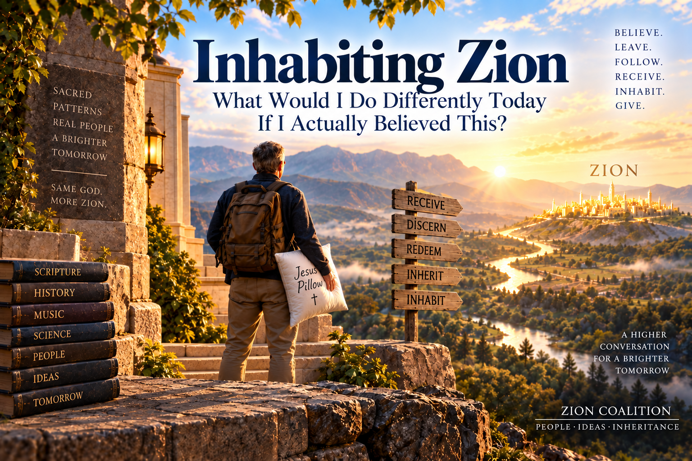

Inhabiting Zion
What Would I Do Differently Today If I Actually Believed This?
Maybe the temple has been teaching me this pattern all along.
Before going any farther, I notice something.
As a Latter-day Saint, I already participate in a ritual that looks remarkably like the pattern I have been describing.
I go to the temple to receive my endowment.
Receive.
Even the language sounds like inheritance.
I don't go there primarily to manufacture something. I go to be given something—to receive instruction, covenant, promises, clothing, names, signs, symbols, and ultimately a symbolic inheritance associated with entering the presence of God.
But then something else happens.
For a little while, I inhabit the world the temple is showing me.
Maybe that's worth noticing.
The temple doesn't merely give me a lecture about heaven and send me home.
It creates a world.
I enter it.
I move through it.
Creation.
A garden.
A fallen world.
A veil.
And finally, symbolically, the presence of God.
For a couple of hours, ordinary life is interrupted and I am invited to live inside the story.
In a sense—and I mean this reverently—the temple lets me pretend heaven for a little while.
Not pretend in the sense that heaven is unreal.
Pretend in the way a rehearsal is pretend.
A rehearsal is real activity oriented toward a reality not yet fully present.
“Here, practice living in the world you hope eventually to inhabit.”
That's fascinating to me.
Because perhaps the temple pattern isn't simply:
Maybe it is closer to:
I receive something.
I symbolically inhabit another world.
Then I walk back through the temple doors into ordinary life—my town, Walmart, my house, my computer, my mattress, my music, my problems, and Tuesday afternoon.
And perhaps that is where the endowment becomes especially interesting.
What do I bring home?
Surely the point isn't that I can inhabit something resembling heaven for two hours only to return to an entirely unrelated world.
Maybe I am supposed to bring something of that world with me.
Maybe the temple is a kind of Zion rehearsal.
I practice receiving.
I practice covenant.
I practice moving toward God.
I practice inhabiting sacred space.
And then Jesus sends me back into ordinary space.
Perhaps with an invitation:
“Now, Greg, what would it look like to live a little more like that out here?”
That suddenly connects the temple with My Jesus-Greg WORLD in a way I hadn't quite seen before.
Maybe my Jesus Pillow, Jesus Shower, Jesus Table, Jesus Bread, Jesus Water, Jesus Nap, Jesus TV, and all these other experiments are, in their own tiny and very different way, attempts to carry sacred inhabitation home.
The temple says:
Here is sacred space. Enter it.
And perhaps Jesus has also been teaching me:
Now learn to recognize and create reminders of sacred space everywhere.
Not because my bedroom becomes a temple.
Not because my rituals become temple ordinances.
They don't.
But perhaps the temple has been tutoring my imagination in a larger principle:
Receive something from God.
Enter it.
Experience it.
Practice living there.
Then carry what you learned back into ordinary life.
Maybe I have been practicing INHABIT for decades without having that word for it.
And maybe Zion asks me to take the lesson seriously.
Maybe I have been imagining Zion mostly as a destination.
Something ahead.
Something to build.
Something Jesus and I are moving toward.
But My Inheritance introduces a strange complication.
What if some of Zion is already here?
Not finished Zion.
Not the fulness of Zion.
But pieces.
Raw materials.
Treasures carried out of Egypt.
Manna lying on the ground.
Vineyards I didn't plant.
Wells I didn't dig.
Things Jesus may have been preparing through millions of people long before Greg arrived.
If that's true, then eventually I have to do more than believe it.
I have to live there.
Maybe that's the next verb:
INHABIT.
Greg, what would you do differently today if you actually believed this?
I imagine Jesus asking me that.
And that's an uncomfortable question.
Because I can write an essay about inheritance without actually behaving like an heir.
I can say:
“Jesus has already prepared so much.”
And then spend the rest of the day behaving as though absolutely everything depends upon Greg.
I can say:
“The burden is light.”
And then carry it like it's crushingly heavy.
I can say:
“Zion is hiding in plain sight.”
And spend the day looking somewhere else for it.
So maybe Jesus asks:
“Greg, if you really believe what I've been teaching you, what changes at 10:17 Tuesday morning?”
That's where theology gets interesting.
Maybe Zion begins with my pillow.
That sounds ridiculous.
Which is one reason I like it.
If Zion is only a civilization somewhere over the horizon, I can spend my entire life preparing for it without ever actually living in it.
But I already have a pillow.
And Jesus and I have turned an ordinary pillow into my Jesus Pillow.
The pillow didn't physically change.
My relationship with it changed.
Now it can remind me of Jesus.
The same thing can happen with a shower.
Jesus Shower.
A nap.
Jesus Nap.
Bread.
Water.
A lamp.
A table.
A mattress.
A doorway.
A room.
Maybe this is more significant than I have understood.
Perhaps Jesus has been teaching me how to inhabit a world differently.
The ordinary world doesn't necessarily disappear.
It gets another layer of meaning.
It gets pointed toward Jesus.
It gets born again.
And suddenly Zion isn't only something I am trying to reach.
A little piece of it is happening in my bedroom.
Greg, inhabit the inheritance.
Suppose somebody gives me a house.
I can stand outside admiring it.
I can study the blueprints.
I can write essays about its architecture.
I can defend the proposition that the house really belongs to me.
I can create a website explaining the house.
But eventually somebody might reasonably ask:
“Greg, are you ever going to go inside?”
Inheritance is incomplete until it becomes inhabited.
Maybe that is what Jesus is teaching me now.
I have been noticing the inheritance.
Music.
Scripture.
Technology.
Art.
Science.
Ideas.
People.
Language.
Stories.
Tools.
Rooms.
Food.
My body.
The earth.
Grace.
Okay.
Now:
Use them.
Enjoy them.
Consecrate them.
Share them.
Live among them with Me.
Maybe receiving the inheritance was never supposed to end with:
“Look what Jesus gave me.”
Maybe it continues:
“Jesus, show me how to live here.”
Inhabit the music.
Take classic rock.
For years Jesus and I have been redeeming songs.
That's more than an argument that secular culture can contain treasure.
I actually live with the treasure.
The song enters My Jesus-Greg WORLD.
It becomes part of Jesus Radio.
It can become part of Jesus TV.
It becomes part of my spiritual vocabulary.
The melody that once reminded me of one thing can now remind me of Jesus.
That is inhabiting.
I don't merely carry the treasure out of Egypt.
I unpack it.
I put it in the house.
I use it.
Maybe that's an important distinction.
Exodus says:
Carry the treasure out.
Inheritance says:
Receive the treasure.
Inhabiting says:
Now find out what the treasure is for.
Inhabit the technology.
Consider how much technology I use that Greg did not create.
Computer.
Phone.
Internet.
HTML.
GitHub.
AI.
Video.
Audio.
Digital images.
None of that originated with me.
Inheritance.
But what happens next?
I can complain about what technology has become.
I can call it Babylon.
I can run away from it.
Or I can ask:
“Jesus, what can this become?”
A computer can help build Zion Coalition.
A website can become a field guide.
AI can become a thinking partner.
A camera can become Jesus TV.
Audio technology can turn a thought piece into something I can hear while resting.
A phone can deliver scripture, music, conversation, and reminders of Jesus.
The technology doesn't automatically become Zion simply because I use it.
Discernment remains necessary.
But perhaps inhabiting Zion means refusing to surrender every useful tool to Babylon.
Receive it. Discern it. Redeem it. Then live with it differently.
Inhabit my Church.
This may be another real-world test.
If Exodus means leaving an old worldview, that does not necessarily mean I must despise the world that formed me.
My LDS inheritance is enormous.
Scripture.
Hymns.
Sacrament.
Temple.
Covenant.
Service.
Community.
Language.
Stories.
Practices.
Questions.
Even tensions that forced me to seek Jesus more deeply.
Some things I may understand differently now.
Some things I may question.
Some things I may eventually leave behind.
Some things I may treasure more than ever.
But inhabiting means I don't have to reduce my choices to:
or
I can bring the treasure with me.
I can continue asking:
Does this point me toward Jesus?
What is good here?
What needs examining?
What has Jesus already given me through these people?
What should I carry forward?
Maybe that's another way of refusing to leave Egypt empty-handed.
Inhabit other people's gifts.
This one could radically change how I see people.
Suppose Jesus really has been wrought upon people far beyond the boundaries where I previously expected Him to work.
Then the question when I encounter somebody becomes less:
“Are they one of us?”
And more:
“Jesus, what might You have placed in them?”
The scientist may know something I need.
The carpenter may have already solved my problem.
The programmer may have built my tool.
The musician may have written my melody.
The neighbor may see something I don't.
The unbeliever may possess a gift I desperately need.
The believer may need something I possess.
Suddenly Zion starts looking less like Greg assembling everything himself and more like a gigantic exchange of gifts.
You have something I need.
I have something you need.
Neither of us has everything.
Maybe that's why Zion requires people.
Inhabit enoughness.
This may be harder for me.
There is always another thing I could make.
Another essay.
Another webpage.
Another image.
Another redeemed song.
Another idea.
Another improvement.
Another room.
Another plank on the bridge.
And creativity is wonderful.
But if I actually believe in inheritance, then perhaps occasionally I have to look at what already exists and say:
Enough.
Not:
“Everything is finished.”
But:
“Enough for today.”
That could be a profoundly Zion-like sentence.
Because it means I trust that Jesus is still working when Greg stops working.
Somebody else is carrying something.
Something has already been prepared.
Tomorrow has manna too.
I don't have to gather tomorrow's portion tonight.
Inhabit rest.
Now the inheritance idea gets very practical.
Take the nap.
Really take it.
Not:
“I am technically lying down while mentally supervising the construction of Zion.”
Rest.
Maybe my Jesus Nap is not time stolen from Zion.
Maybe it is part of Zion.
If I believe Jesus has gone ahead of me, then rest becomes an act of trust.
The world continues while Greg sleeps.
Artists keep creating.
Programmers keep programming.
Parents keep raising children.
Scientists keep discovering.
Trees keep growing.
The earth keeps turning.
Jesus does not need Greg awake twenty-four hours a day.
That's almost embarrassingly obvious.
But perhaps I don't always live as though I believe it.
Inhabiting inheritance may require inhabiting rest.
Inhabit relationships.
Zion cannot just be Greg and Jesus having interesting ideas.
Eventually another human being walks into the room.
What happens then?
Maybe inhabiting Zion means I listen a little longer.
Judge a little slower.
Give someone more room to be different.
Ask what gift they are carrying.
Let them help.
Receive something without needing to improve it.
Offer something without needing them to accept it.
Forgive.
Apologize.
Laugh.
Eat together.
Sit together.
Do nothing productive together.
Maybe some of the most important Zion-building moments don't look remotely like Zion-building.
Maybe they look like:
“Come sit down.”
Inhabit my daily work.
Maybe I need a different question at the end of the day.
Instead of:
“Greg, how much did you accomplish?”
perhaps:
“Greg, what did you receive?”
What did I notice?
What did someone give me?
What was already here?
What did Jesus invite me to do?
What did I discern?
What did I redeem?
What did I enjoy?
What did I give away?
And perhaps occasionally:
What did I wisely leave undone?
That changes the scoreboard.
A successful day might produce a new webpage.
Or a redeemed song.
Or a repaired gutter.
Or a conversation.
Or a nap.
Or one sentence.
Or nothing I can presently identify.
Maybe I don't always know what scene I'm in while I'm living it.
Inhabit the ordinary.
This may be the part I love most.
I keep looking for Jesus in extraordinary things.
Revelation.
Paradigm shifts.
Zion.
Prophecy.
Miracles.
Big ideas.
And meanwhile:
Water.
Toast.
A mattress.
A song.
A shower.
A friend.
A computer.
A tree.
A room.
Tuesday morning.
Maybe Jesus keeps saying:
“Greg, I'm already here.”
Perhaps inhabiting Zion is partly learning to stop requiring the world to become spectacular before I recognize it as holy.
The spectacular may come.
Great.
But perhaps Zion also has dishes.
And laundry.
And broken things.
And tired people.
And lunch.
If Jesus is there too, maybe I can live there too.
Inhabit discernment.
None of this means everything becomes Zion because Greg puts the word Jesus in front of it.
That would be easy.
Jesus Pillow.
Jesus Computer.
Jesus Song.
Jesus Whatever.
Done.
No.
The Inference Bridge still matters.
Inspect the plank.
My Exodus still matters.
Some things stay in Egypt.
My Inheritance still matters.
Not everything I encounter belongs to me or is good for me.
So inhabiting Zion isn't decorating ordinary life with religious labels.
It is continually asking:
Jesus, what is this?
What does it become when I bring it toward You?
Does it increase love?
Does it increase truth?
Does it increase freedom?
Does it help me serve?
Does it help me rest when I should rest?
Does it bring me closer to You?
Maybe Zion is not merely a place.
Maybe it is also a way of relating to everything.
And then: give it away.
Inheritance could become selfish very quickly.
Look what I inherited.
My songs.
My ideas.
My world.
My Zion.
But inheritance contains another movement.
What I receive today may become somebody else's inheritance tomorrow.
Someone taught me to read.
Someone wrote the scripture.
Someone wrote the song.
Someone invented the computer.
Someone built the road.
Someone planted the tree.
Someone loved Greg.
Now Greg gets a turn.
Maybe I write something.
Maybe I redeem a song.
Maybe I build a webpage.
Maybe I encourage somebody.
Maybe I fix something.
Maybe I simply tell another person:
“You can use this.”
And then I release it.
I don't have to control what happens next.
Maybe somebody coming after me will receive something Jesus and Greg worked on and do something with it that I cannot presently imagine.
Good.
That's inheritance too.
Maybe Zion is a verb before it is a noun.
Or perhaps several verbs.
Believe.
Something larger may be possible.
Leave.
I don't have to remain inside every old boundary.
Follow.
I don't need the complete itinerary.
Receive.
Much has already been prepared.
Inhabit.
Live today as though those things are actually true.
And perhaps inhabiting eventually produces another verb:
Give.
Receive the inheritance.
Live inside it.
Add whatever small contribution Jesus asks of me.
Then leave the door open for somebody else.
So maybe I don't need to ask every morning:
“Jesus, how do I build Zion today?”
Maybe sometimes a better question is:
“Jesus, where is Zion already appearing today—and how would You have me live there?”
Maybe the answer is enormous.
Maybe the answer is tiny.
Maybe it is Zion Coalition.
Maybe it is a redeemed song.
Maybe it is another human being.
Maybe it is bread.
Maybe it is water.
Maybe it is my mattress.
Maybe it is rest.
Maybe it is the next thing immediately in front of me.
And perhaps that is how the Promised Land gradually stops being a place on my map.
It becomes somewhere I know how to live.
Believe.
Leave.
Follow.
Receive.
Inhabit.
Give.
Maybe Zion isn't only ahead of me.
Maybe Jesus is teaching me how to live in little pieces of it now.
The Book of Zion Coalition
Five major movements
← Back to The Book of Zion Coalition